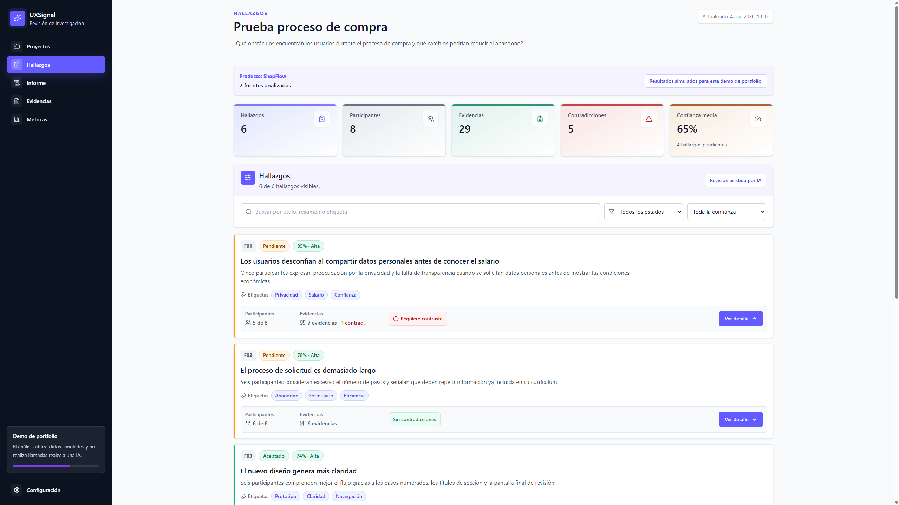
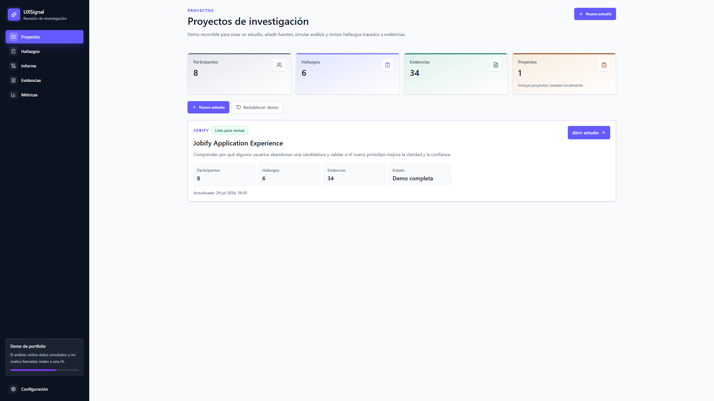
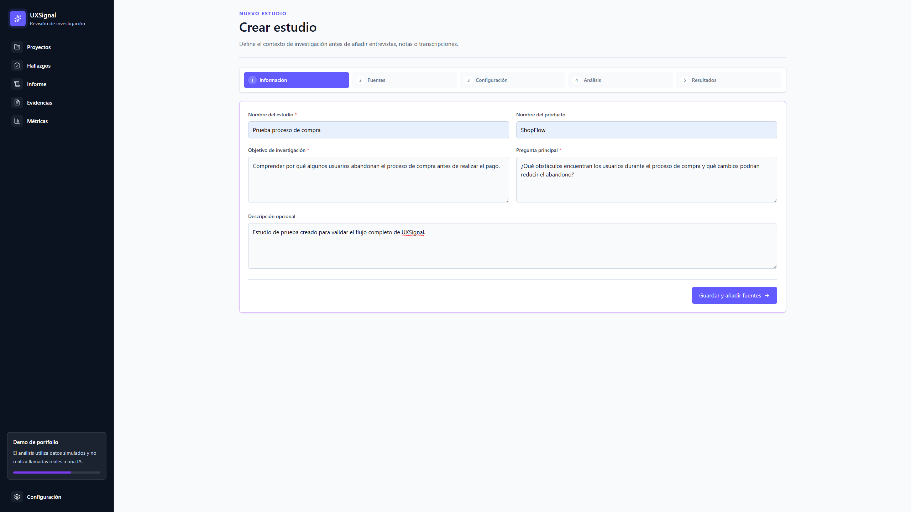
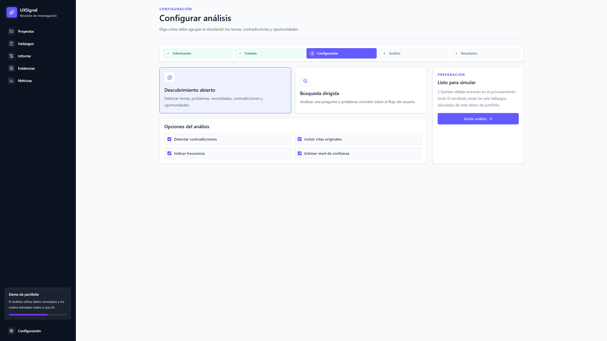
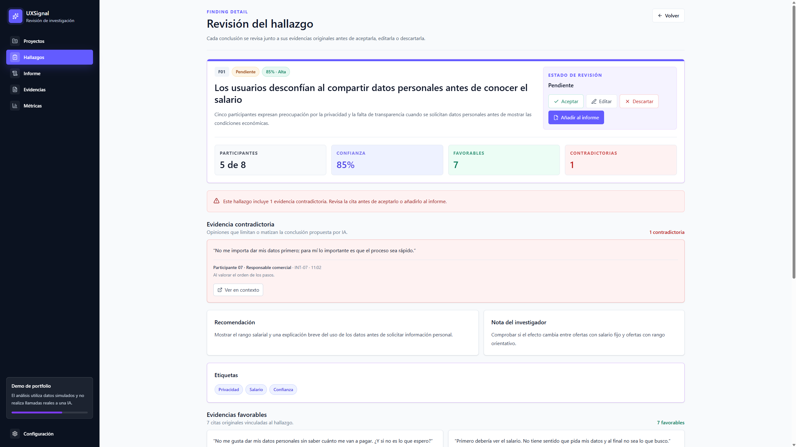
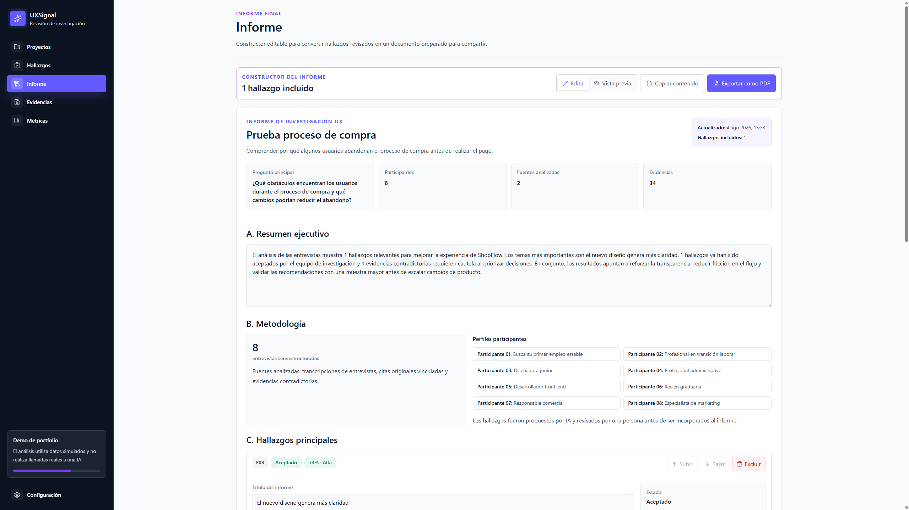
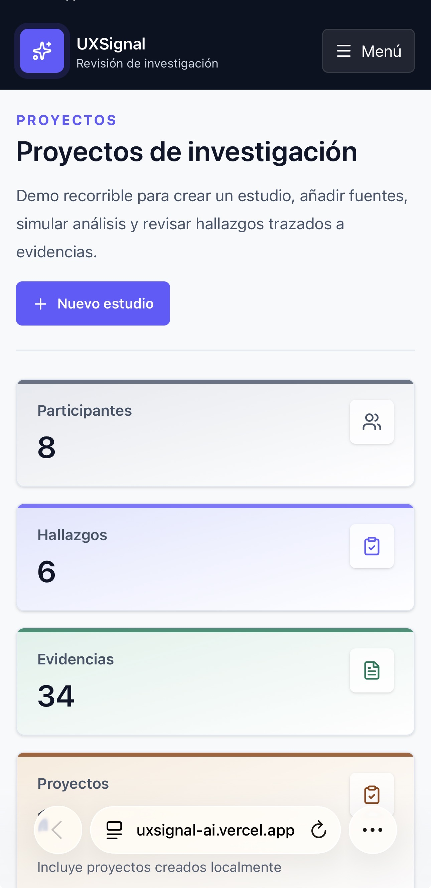
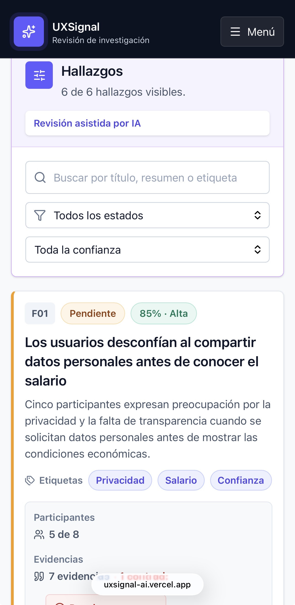
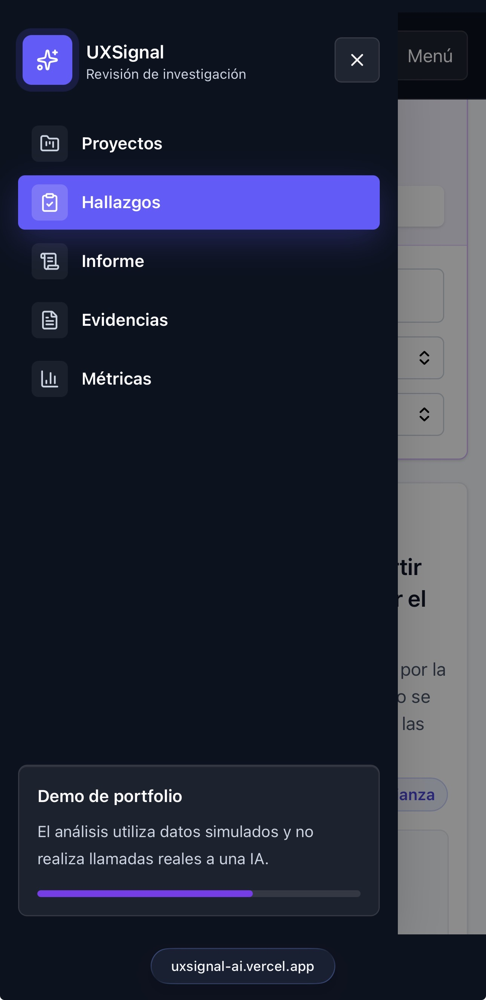

PRODUCT DESIGN · UX/UI · FRONT-END · AI
UXSignal
Investigación UX asistida por IA, con evidencias trazables y revisión humana.
Diseñé y desarrollé un producto que transforma entrevistas y notas en hallazgos estructurados, mostrando sus fuentes, contradicciones y nivel de confianza antes de incorporarlos a un informe.

Contexto
El problema
En equipos pequeños, Product Designers y UX Researchers suelen revisar entrevistas de forma manual: leen transcripciones, localizan patrones, seleccionan citas, detectan contradicciones y preparan informes. Este proceso consume tiempo y puede romper la relación entre una conclusión y las evidencias que la sustentan.
El reto no era simplemente generar resúmenes con IA. Era diseñar una herramienta que acelerase la síntesis sin convertir el análisis en una caja negra.

Objetivo
El objetivo del producto
Diseñar un flujo completo que permitiera crear un estudio, añadir fuentes, configurar un análisis, revisar hallazgos y preparar un informe final. La IA debía actuar como asistente, mientras que la decisión final permanecía siempre en manos del investigador.
- Crear y editar estudios.
- Añadir entrevistas, notas y transcripciones.
- Configurar el tipo de análisis.
- Revisar hallazgos y contradicciones.
- Consultar evidencias originales.
- Construir un informe editable.
Flujo
Un flujo de principio a fin
- Crear estudio
- Añadir fuentes
- Configurar análisis
- Procesamiento
- Revisar hallazgos
- Consultar evidencias
- Construir informe


Decisiones de diseño
Diseñar confianza alrededor de la IA
Hallazgos trazables
Cada conclusión muestra participantes, evidencias favorables, contradicciones, confianza y fuentes relacionadas. El usuario puede entender de dónde procede el resultado.
Revisión humana visible
Los hallazgos pueden aceptarse, editarse, descartarse, reabrirse o añadirse al informe. La IA propone; el investigador decide.
Contradicciones explícitas
Las opiniones que limitan una conclusión no se ocultan. Se muestran con una jerarquía visual específica para evitar interpretaciones excesivamente seguras.
Confianza comprensible
El producto combina un porcentaje con una etiqueta cualitativa para ayudar a valorar la solidez de cada hallazgo.

Informe
De hallazgos revisados a un informe editable
Los hallazgos aceptados pueden incorporarse a un informe sin modificar la fuente original. El investigador mantiene control sobre el resumen ejecutivo, la metodología, el orden, las recomendaciones y la exportación.

Responsive
Una experiencia adaptable
La interfaz se adapta a pantallas pequeñas mediante tarjetas apiladas, filtros verticales y un menú lateral accesible. El objetivo fue conservar la jerarquía visual y las acciones principales sin trasladar literalmente el diseño de escritorio.



Desarrollo
Diseño y desarrollo del MVP
Además de diseñar el producto, implementé el flujo completo y su sistema de estados. Cada estudio conserva de forma independiente sus fuentes, hallazgos, decisiones, evidencias, métricas e informe.
Next.jsReactTypeScriptTailwind CSSReact ContextlocalStorageGitHubVercel
- Dashboard de proyectos.
- Creación y edición de estudios.
- Gestión y validación de fuentes.
- Configuración del análisis.
- Procesamiento simulado.
- Hallazgos dinámicos por estudio.
- Evidencias y métricas.
- Constructor de informe.
- Persistencia local.
- Diseño responsive.
Limitaciones
Transparencia sobre el alcance
UXSignal es un MVP de portfolio. La versión actual utiliza datos y resultados simulados para demostrar el flujo completo del producto. No realiza llamadas reales a una IA, no incluye backend, autenticación ni colaboración en tiempo real.
Explora el producto